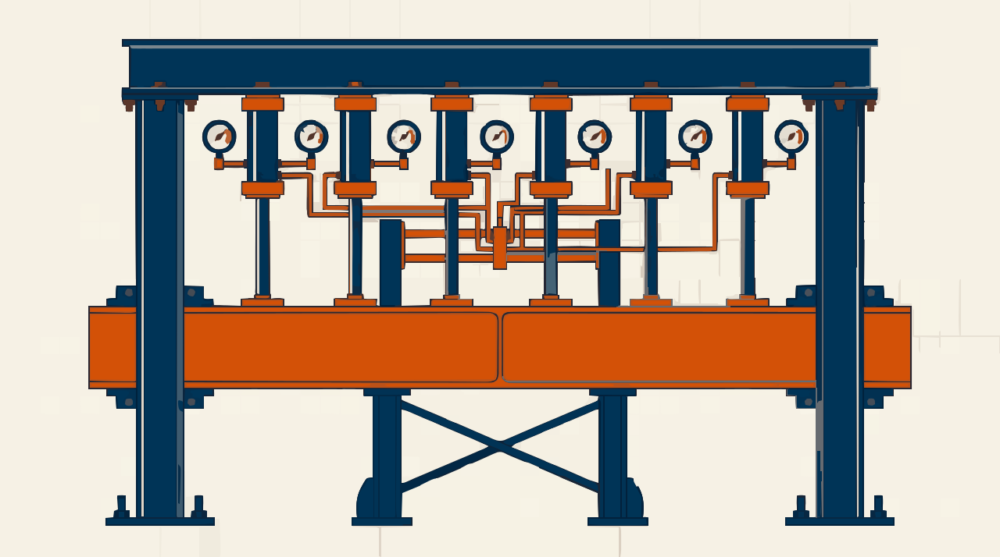

El puente · Sesión 9 · Cierre del Proyecto 1
Inteligencia de Negocios · Dudbil Olvasada Pabón Riaño · UNAB
Resultados de aprendizaje que se evalúan hoy · Proyecto 1 · 25 %
Ejemplo: Online Retail cruza el puente
Datos reales: Chen (2015), CC BY 4.0. La pregunta, la gerencia y la meta de £700.000 son supuestos del caso. Es un modelo de estructura, no una respuesta para copiar.
Antes de presentar: ¿cuál de estas podría estar en tu proyecto?
Rúbrica del Proyecto 1 · Calculadora para el docente
Los criterios son de la guía de aprendizaje. Los pesos (casi iguales, para sumar 100) y la escala de 0 a 5 son una propuesta: ajústelos. No guarda datos.
Presentación individual
English immersion · 10 minutes · The elevator pitch
Defend your project in 60 seconds, in English.
“My audience is ___. They need to decide ___. I used data from ___. My main KPI is ___, and it shows ___. I recommend ___. One limitation is ___.”
Reflexión · 5 minutos, por escrito
El Proyecto 2 empieza en la sesión 12, con un problema nuevo.

Rótulo de la obra
Planos de referencia
Chen, D. (2015). Online Retail [conjunto de datos]. UCI. CC BY 4.0. doi:10.24432/C5BW33
Knaflic, C. N. (2015). Storytelling with Data. Wiley. doi:10.1002/9781119055259
Microsoft Learn. Understand star schema and the importance for Power BI. learn.microsoft.com
Microsoft Learn. Key Performance Indicator (KPI) visuals. learn.microsoft.com
UNAB. Guía de aprendizaje de Inteligencia de Negocios: calendario, resultados y recomendaciones de rúbrica. Documento del curso.
Iconos: Lucide, licencia ISC. Dirección de arte e ilustraciones: generadas con Gemini, vectorizadas y adaptadas; las ilustraciones no contienen datos. Gráficas hechas con los datos reales.